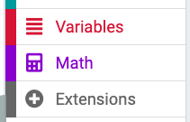
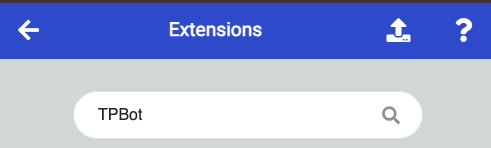
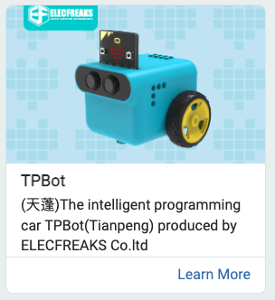
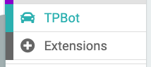
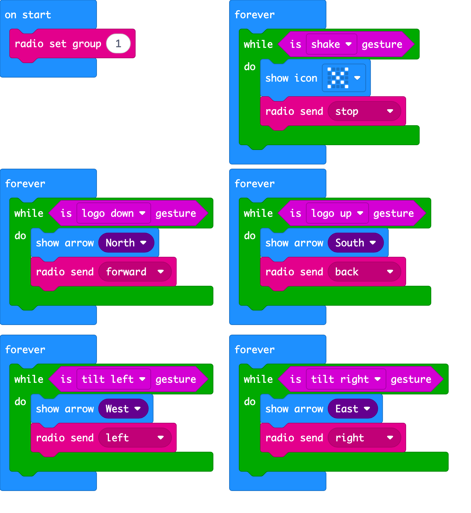
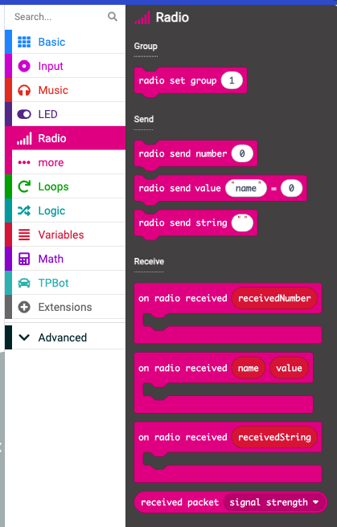
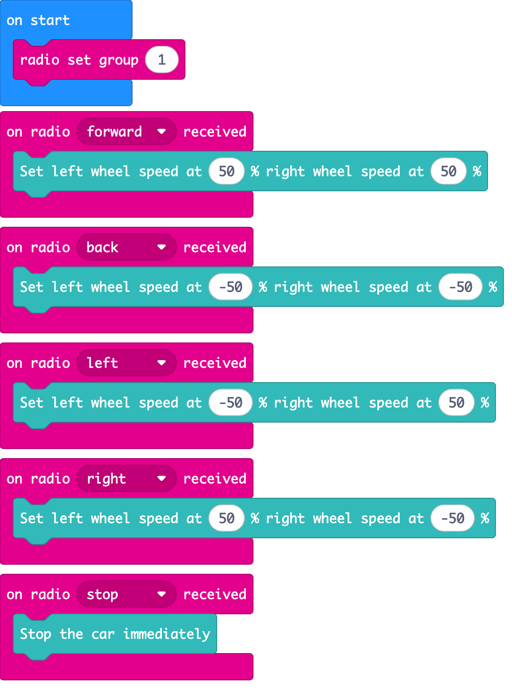

Today one micro:bit becomes a remote in your hand. Tip it, and the micro:bit inside your TPBot hears the message and drives. Then take on the challenge course.
Every micro:bit has a small radio built in. It sends
short messages through the air to other micro:bits nearby: no wires and no internet. You tip the remote, it
sends a message such as forward, and the micro:bit in the car hears it and drives. Your pair has
one car and two micro:bits. Write your answers on the handout as you go.
Open each step as you reach it. The pictures match what you will see in MakeCode.
Your car's number is on its label. Write it on your handout. Use it as the radio group in both programs, with radio set group in on start. Every pair then drives only its own car, even with eight cars in the room.
Start a new project called remote. Then add the TPBot extension:

TPBot in the search box and press Enter.


remote: tip it, and it shows an arrow and sends a message.forward. Make back, left, right and stop the same way, all in small letters.stop. Now the remote's screen shows what you are sending.

The pink Radio drawer holds radio set group. Scroll down the same drawer for radio send and on radio … received.
To find any block fast, type its name in the Search box at the top of the block list, for example gesture.
car-2: each message sets the two wheel speeds.Start a project called car-2 and add the TPBot extension (step 2). Use the same group number and the same five message names as the remote. Download it to the second micro:bit and slot that one into the car.

| Message | Left wheel, right wheel |
|---|---|
forward | both +50 |
back | both −50 |
left | −50 and +50 |
right | +50 and −50 |
stop | stop the car |
The idea. Opposite wheel speeds spin the car on the spot, as on Friday. The car keeps doing its last order until a new message arrives, so stop is a message too.
Switch the car on, on the floor. Hold the remote flat, screen up.
| You do this with the remote | The remote shows | Message sent |
|---|---|---|
| Tip the logo down | ↑ | forward |
| Tip the logo up | ↓ | back |
| Tilt left | ← | left |
| Tilt right | → | right |
| Shake | ✕ | stop |
Write what the car did for each one in the table on your handout.
Your car may need different percentages on its wheels to drive perfectly straight, or to turn more smoothly. You decide what to change. Change a number in car-2, download, and drive again. Write what you changed and what happened on your handout.
Drive with the remote only: hands off the car once it starts. Record your tries and best time for each.
Test, change one thing, test again. After each challenge, change one percentage in car-2 that would make the next run better, and write down whether it helped. This is how designers work.
forward and red on stop, with Set headlight color to.left instead of −50 and 50.